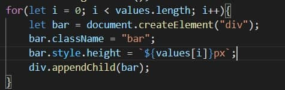

Сутність JavaScript — це спеціальний фрагмент коду JavaScript, який можна вставити безпосередньо як значення будь-якого атрибута HTML у HTML-документ. Оскільки це код JavaScript, значення не повинно бути статичним і може змінюватися на льоту відповідно до сценарію, що маніпулює. Синтаксис для сутності JavaScript на нашому сайті виглядає так:

Значення, що були введені в Оbject на сторінці
Значення стилів створених елементів, задані через підстановку